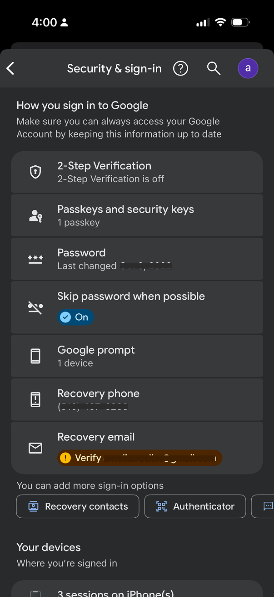
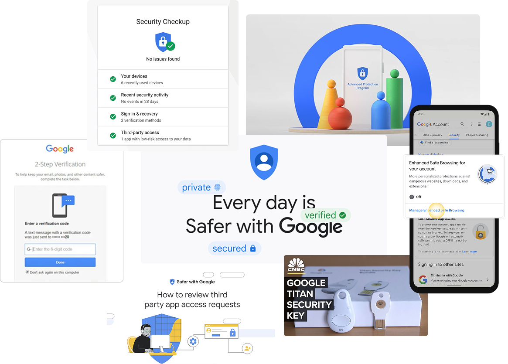
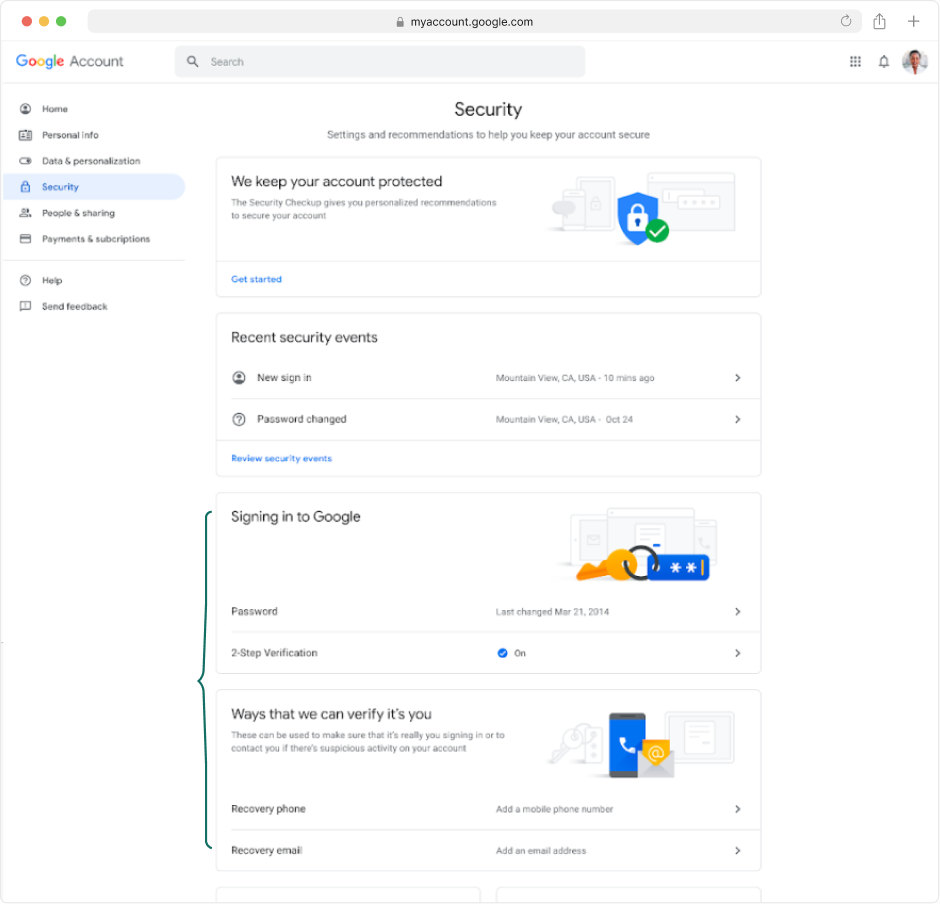
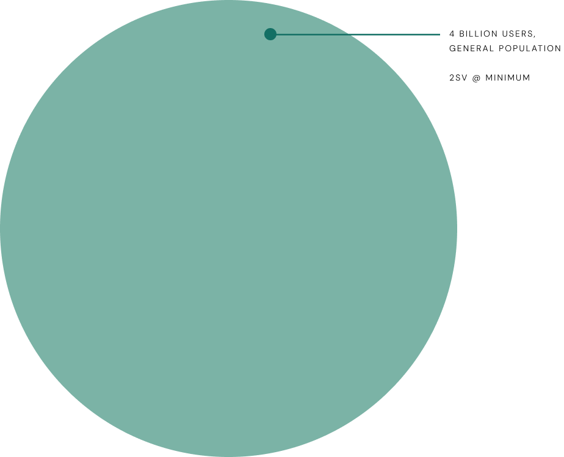

Simplifying account security

A new Security Settings tab wasn't on the team's roadmap, but I led its redesign and had it successfully launched. Three years later, the framework I designed still shapes the page 4 billion users land on.
The security tab, three years later...
While some of the proposed redesign didn't ship, the framework I socialized and influenced the team with (the principles, the IA, the patterns) has visibly shaped how Google's account security page evolved.
Four key decisions are still present today:
The renaming. "Security Settings" became "Security & sign-in" - directly reflecting the framing I championed: that the security page should be organized around how users sign in, not as a generic settings dump. This was one of the more debated framing decisions at the time.
"How you sign in to Google" as a consolidated section header. The current page uses this exact framing to anchor the authentication methods section, and the "How you sign in to Google" card, organizing 2SV alongside passkeys, password, Google prompt, and recovery options, is the structure I designed.
Chip-based affordance for adding sign-in methods. The horizontally scrolling row of chips at the bottom of the card ("Recovery contacts," "Authenticator," and others) is the interaction pattern from the P0 - preserved through three years of iteration. This was another one of the more contested design decisions during the project; the eventual data validated it.
Warning alerts for items needing attention. Inline warning badges (i.e., "Verify [recovery email]") still surface action items from the Security Checkup directly within the relevant row, rather than in an entirely separate experience. This pattern was part of the broader redesign principles I pushed for that was successfully launched.
While Google's security UX has continued to evolve through many people's contributions since I left the team, the framing decisions I drove during this initiative have stayed consistent and have left a lasting impact on the security narrative.

The current security tab in 2026Project outcomes
25% increase in 2SV adoption among users who landed on the new entry point - directly de-risking Google's Secure by Default rollout that followed.
40% lift in users adding additional sign-in methods - a chip-based affordance for adding methods drove significant diversification in the leveraged sign-in options than the prior list pattern.
Led a UX driven initiative across product, engineering, UXR, and UXW, successfully securing leadership buy-in and cross-functional alignment.
The redesign gave the team and leadership confidence that the Secure by Default initiative would be successful. The user-facing experience was no longer the open question it had been at the start of the initiative.
Google prides itself in being a leader in account security
Google has invested heavily in security infrastructure, building industry-leading features to protect billions of users worldwide, as evidenced by the diverse security ecosystem. From Security Checkup to 2-Step Verification, Titan Security Keys to Advanced Protection Program – Google offers a comprehensive suite of security tools designed to keep accounts safe.

Google's Security Paradox
Google offers industry-leading security features, but users struggle to understand and adopt them, making the ability to improve a user's account security overwhelming for most users.
Unclear hierarchy
While Security Checkup provided tailored recommendations, the "Recent security events" card appeared inconsistently and offered no actionable insights.
Fragmented core features
Account access controls were split into two confusing sections: "Signing in to Google" and "Ways we can verify it's you." These appeared competitive rather than complementary.
No clear narrative
Users couldn't easily understand what to prioritize or how the features connected to their overall account security.

The Security Settings tab before the redesignUser insights reinforce the concern
Feeling vulnerable
"You never really know; you always have a feeling that there is somebody out there who could hack you or something."
Overwhelming complexity
"[Account security] feels like work. Kind of like 'Inception' – you click on that, you then go deeper. I don't feel that I can go into it any further, because I'd get lost."
Confusing language
"I'd have to just give up. When I read all these words, I don't really understand what I'm reading. There's lots of words."
Ensuring users are Secure by Default
Google was preparing to auto-enroll all 2SV-capable accounts as part of a 'Secure by Default' initiative. This meant 4 billion users – the general population – would soon be automatically enrolled in 2-Step Verification.

The goal
With engineering focused on authentication infrastructure and 2-Step Verification enrollment, I led a UX initiative to simplify how users understand and manage these foundational security features.
Provide Google users with a simple approach to their Security Settings, clarifying our obscure security offerings with a clear authentication focus.
How you sign in to Google
More visual emphasis on Security Checkup, providing tailored security recommendations
Combined recovery options and authentication methods into one "How you sign in" card
"More sign-in options" CTA will lead to contextual education page
Pushing boundaries with educational content
I championed the "What sign-in options are right for you?" page design based on user research showing people wanted more context and education around security features. The mocks use placeholder images to rapidly validate information architecture with stakeholders before investing in detailed graphics. Working with my UX writing partner, I organized authentication methods by priority – most secure, convenient, and backup options – while prioritizing security over convenience despite technical complexity.
A landing page for users to explore and learn more about the multitude of sign in options available
Minimum recommended methods for 2SV to be highlighted above
Progressive disclosure was incorporated to reduce cognitive load and encourage user engagement. When expanded, each section provides short summaries about the value of each method, plus educational links.
"Learn more" links open educational wizards that I previously designed for Google's Advanced Protection Program enrollment flow.
Educational wizards offer delightful educational moments within users' existing journeys, proven to enhance user trust compared to traditional Help Center articles that navigate users away and cause significant drop-off. My goal was to leverage these educational components across various security experiences to build a comprehensive system, repurposing proven patterns that keep users engaged in their current flow rather than losing them to external documentation.
P0: 2SV Onboarding Entry-point and Suggestive Chips
After socializing this concept across various PMs and engineering leads, it was overwhelmingly clear to leadership the user benefit that these changes would provide. With Secure by Default's timeline quickly approaching, we knew however, that we needed to launch something quickly and the full redesign wouldn't ship in time.
I worked with my PM and engineering leads to scope a P0 focused on the 2SV onboarding entry point – the central focus and winning point of the redesigned Security Settings tab, and negotiated a suggestive chip pattern at the bottom of the section to more simply highlight the additional authentication methods users could add to their account. Together, we outlined a phased approach to incrementally roll out the guided experience and progressively improve users' security posture.
Designing for the users security tools weren't built for.
Account security experiences tend to be designed for the users who already care about security. The Secure by Default population was not. It consisted of the 4 billion users about to be enrolled into something they hadn't asked for. Designing for that audience taught me to start with users who avoid the feature, not the ones who adopt it.
Look outside of the product roadmap to lead the most strategic efforts.
Secure by Default was an engineering-led effort where the UX had a narrow scope. As I started thinking about how we framed our security narrative on the settings page, it became clear that there was a wider gap to address and I pushed the team to address it. I constantly look for these gaps in every new project I lead.